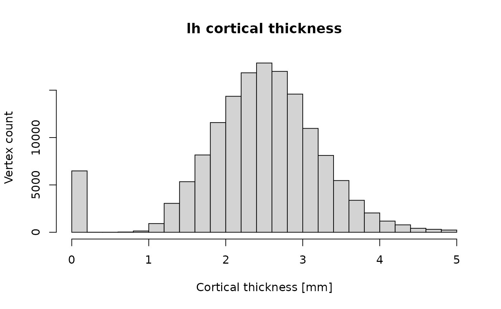
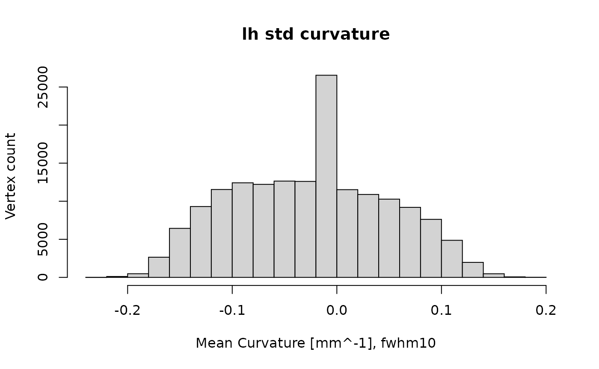

vignettes/freesurferformats.Rmd
freesurferformats.RmdIn this document, we show how to read brain imaging data from FreeSurfer binary files. These files are created and used by the FreeSurfer neuroimaging software suite to store volume data and surface morphometry data computed from MRI brain images.
Brain imaging data come in different formats. Typically, the data is acquired on a scanner that outputs a set of two-dimensional (2D) DICOM format images. The 2D images are often combined into a single file that holds a 3D or 4D stack of images for further processing. Common formats include ANALYZE, NIFTI, and the MGH format used by FreeSurfer.
This freesurferdata R package implements functions to parse data in MGH format, as well as some related FreeSurfer formats. MGH stands for Massachusetts General Hospital, and is a binary format. The MGZ format is a compressed version of the MGH format.
Note: To learn how to write neuroimaging data with this package, read the vignette Writing FreeSurfer neuroimaging data with freesurferformats that comes with this package.
Here is a first example for reading MGH data.
library("freesurferformats")
mgh_file = system.file("extdata", "brain.mgz", package = "freesurferformats", mustWork = TRUE)
brain = read.fs.mgh(mgh_file)
cat(sprintf("Read voxel data with dimensions %s. Values: min=%d, mean=%f, max=%d.\n", paste(dim(brain), collapse = 'x'), min(brain), mean(brain), max(brain)));## Read voxel data with dimensions 256x256x256x1. Values: min=0, mean=7.214277, max=156.Now, brain is an n-dimensional matrix, where n depends on the data in the MGZ file. A conformed FreeSurfer volume like brain.mgz typically has 4 dimensions and 256 x 256 x 256 x 1 = 16777216 voxels. The final dimension, which is 1 here, means it has only a single time point or frame. In this case, the file was compressed and in MGZ format, but the function does not care, it works for both MGH and MGZ.
If you need the header data, read on.
To access not only the volume data, but also the header, call read.fs.mgh like this:
brain_with_hdr = read.fs.mgh(mgh_file, with_header = TRUE);
brain = brain_with_hdr$data; # as seen before, this is what we got in the last example (the data).
header = brain_with_hdr$header; # the headerNow you have acces to the following header data:
header$dtype # int, one of: 0=MRI_UCHAR; 1=MRI_INT; 3=MRI_FLOAT; 4=MRI_SHORT
header$ras_good_flag # int, 0 or 1. Whether the file contains a valid vox2ras matrix and ras_xform (see header$vox2ras_matrix below)
header$has_mr_params # int, 0 or 1. Whether the file contains mr_params (see header$mr_params below)
header$voldim # integer vector or length 4. The volume (=data) dimensions. E.g., c(256, 256, 256, 1) for 3D data.If your MGH/MGZ file contains valid information on the vox2ras matrix and/or acquisition parameters (mr_params), you can access them like this for the mr params:
if(header$has_mr_params) {
mr_params = header$mr_params;
cat(sprintf("MR acquisition parameters: TR [ms]=%f, filp angle [radians]=%f, TE [ms]=%f, TI [ms]=%f\n", mr_params[1], mr_params[2], mr_params[3], mr_params[4]));
}## MR acquisition parameters: TR [ms]=2300.000000, filp angle [radians]=0.157080, TE [ms]=2.010000, TI [ms]=900.000000And like this for the vox2ras_matrix:
if(header$ras_good_flag) {
print(header$vox2ras_matrix);
}## [,1] [,2] [,3] [,4]
## [1,] -1 0 0 127.50005
## [2,] 0 0 1 -98.62726
## [3,] 0 -1 0 79.09527
## [4,] 0 0 0 1.00000And finally the ras_xform:
if(header$ras_good_flag) {
print(header$ras_xform);
}## NULLThe MGH/MGZ format is also used to store morphometry data mapped to standard space (fsaverage). In the following example, we read cortical thickness data in standard space, smoothed with a FWHM 25 kernel:
mgh_file = system.file("mystudy", "subject1", "surf", "lh.thickness.fwhm25.fsaverage.mgh")
cortical_thickness_standard = read.fs.mgh(mgh_file)Now, cortical_thickness_standard is a vector of n float values, where n is the number of vertices of the fsaverage subject’s left hemisphere surface (i.e., 163842 in FreeSurfer 6).
If all you need is to perform statistical analysis of the data in the MGH file, you are ready to do that after loading. If you need access to more image operations, I would recommend to convert the data to a NIFTI object. E.g., if you have oro.nifti installed, you could visualize the brain data we loaded earlier like this:
oro.nifti::orthographic(oro.nifti::nifti(brain))If you need advanced visualization, including the option to render morphometry data or annotation on 3D brain surface meshes, you can have a look at the fsbrain package.
Let’s read an example morphometry data file that comes with this package. It contains vertex-wise measures of cortical thickness for the left hemisphere of a single subject in native space.
library("freesurferformats")
curvfile = system.file("extdata", "lh.thickness", package = "freesurferformats", mustWork = TRUE)
ct = read.fs.curv(curvfile)Now, ct is a vector of n float values, where n is the number of vertices of the surface mesh the data belongs to (usually surf/lh.white). The number of vertices differs between subjects, as this is native space data.
We can now have a closer look at the data and maybe plot a histogram of cortical thickness for this subject:
cat(sprintf("Read data for %d vertices. Values: min=%f, mean=%f, max=%f.\n", length(ct), min(ct), mean(ct), max(ct)))## Read data for 149244 vertices. Values: min=0.000000, mean=2.437466, max=5.000000.
hist(ct, main="lh cortical thickness", xlab="Cortical thickness [mm]", ylab="Vertex count")
The package provides a wrapper function to read morphometry data, no matter the format. It always returns data as a vector and automatically determines the format from the file name. Here we use the function to read the file from the last example:
morphfile1 = system.file("extdata", "lh.thickness", package = "freesurferformats", mustWork = TRUE)
thickness_native = read.fs.morph(morphfile1)And here is an example for an MGZ file:
morphfile2 = system.file("extdata", "lh.curv.fwhm10.fsaverage.mgz", package = "freesurferformats", mustWork = TRUE)
curv_standard = read.fs.morph(morphfile2)
curv_standard[curv_standard < -1] = 0; # remove extreme outliers
curv_standard[curv_standard > 1] = 0;
hist(curv_standard, main="lh std curvature", xlab="Mean Curvature [mm^-1], fwhm10", ylab="Vertex count")
Sometimes, vertex-wise data is stored in so-called weight files, which are also known as paint files or simply as w files. They do not simply contain a list of data values, but pairs of (vertex index, value). The format is useful when you have data only for a subset of the vertices of a surface. It seems to be less used these days. Use the read.fs.weight function to read w files.
An annotation file contains a cortical parcellation for a subject, based on a brain atlas. It contains a label for each vertex of a surface, and that label assigns this vertex to one of a set of atlas regions. The file format also contains a colortable, which assigns a color code to each atlas region. An example file would be labels/lh.aparc.annot for the aparc (Desikan) atlas.
Let’s read an example annotation file that comes with this package:
annotfile = system.file("extdata", "lh.aparc.annot.gz", package = "freesurferformats", mustWork = TRUE);
annot = read.fs.annot(annotfile);Note: The example file that comes with this package was gzipped to save space. While this is not typical for annot files, the read.fs.annot function handles it automatically if the filename ends with .gz.
As mentioned earlier, such a file contains various pieces of information. Let us investigate the labels and the atlas region names for some vertices first:
num_vertices_total = length(annot$vertices);
for (vert_idx in c(1, 5000, 123456)) {
cat(sprintf("Vertex #%d with zero-based index %d has label code '%d' which stands for atlas region '%s'\n", vert_idx, annot$vertices[vert_idx], annot$label_codes[vert_idx], annot$label_names[vert_idx]));
}## Vertex #1 with zero-based index 0 has label code '9182740' which stands for atlas region 'lateraloccipital'
## Vertex #5000 with zero-based index 4999 has label code '3957880' which stands for atlas region 'pericalcarine'
## Vertex #123456 with zero-based index 123455 has label code '14474380' which stands for atlas region 'superiortemporal'Now, we will focus on the colortable. We will list the available regions and their color codes.
ctable = annot$colortable$table;
regions = annot$colortable$struct_names;
for (region_idx in seq_len(annot$colortable$num_entries)) {
cat(sprintf("Region #%d called '%s' has RGBA color (%d %d %d %d) and code '%d'.\n", region_idx, regions[region_idx], ctable[region_idx,1], ctable[region_idx,2], ctable[region_idx,3], ctable[region_idx,4], ctable[region_idx,5]));
}## Region #1 called 'unknown' has RGBA color (25 5 25 0) and code '1639705'.
## Region #2 called 'bankssts' has RGBA color (25 100 40 0) and code '2647065'.
## Region #3 called 'caudalanteriorcingulate' has RGBA color (125 100 160 0) and code '10511485'.
## Region #4 called 'caudalmiddlefrontal' has RGBA color (100 25 0 0) and code '6500'.
## Region #5 called 'corpuscallosum' has RGBA color (120 70 50 0) and code '3294840'.
## Region #6 called 'cuneus' has RGBA color (220 20 100 0) and code '6558940'.
## Region #7 called 'entorhinal' has RGBA color (220 20 10 0) and code '660700'.
## Region #8 called 'fusiform' has RGBA color (180 220 140 0) and code '9231540'.
## Region #9 called 'inferiorparietal' has RGBA color (220 60 220 0) and code '14433500'.
## Region #10 called 'inferiortemporal' has RGBA color (180 40 120 0) and code '7874740'.
## Region #11 called 'isthmuscingulate' has RGBA color (140 20 140 0) and code '9180300'.
## Region #12 called 'lateraloccipital' has RGBA color (20 30 140 0) and code '9182740'.
## Region #13 called 'lateralorbitofrontal' has RGBA color (35 75 50 0) and code '3296035'.
## Region #14 called 'lingual' has RGBA color (225 140 140 0) and code '9211105'.
## Region #15 called 'medialorbitofrontal' has RGBA color (200 35 75 0) and code '4924360'.
## Region #16 called 'middletemporal' has RGBA color (160 100 50 0) and code '3302560'.
## Region #17 called 'parahippocampal' has RGBA color (20 220 60 0) and code '3988500'.
## Region #18 called 'paracentral' has RGBA color (60 220 60 0) and code '3988540'.
## Region #19 called 'parsopercularis' has RGBA color (220 180 140 0) and code '9221340'.
## Region #20 called 'parsorbitalis' has RGBA color (20 100 50 0) and code '3302420'.
## Region #21 called 'parstriangularis' has RGBA color (220 60 20 0) and code '1326300'.
## Region #22 called 'pericalcarine' has RGBA color (120 100 60 0) and code '3957880'.
## Region #23 called 'postcentral' has RGBA color (220 20 20 0) and code '1316060'.
## Region #24 called 'posteriorcingulate' has RGBA color (220 180 220 0) and code '14464220'.
## Region #25 called 'precentral' has RGBA color (60 20 220 0) and code '14423100'.
## Region #26 called 'precuneus' has RGBA color (160 140 180 0) and code '11832480'.
## Region #27 called 'rostralanteriorcingulate' has RGBA color (80 20 140 0) and code '9180240'.
## Region #28 called 'rostralmiddlefrontal' has RGBA color (75 50 125 0) and code '8204875'.
## Region #29 called 'superiorfrontal' has RGBA color (20 220 160 0) and code '10542100'.
## Region #30 called 'superiorparietal' has RGBA color (20 180 140 0) and code '9221140'.
## Region #31 called 'superiortemporal' has RGBA color (140 220 220 0) and code '14474380'.
## Region #32 called 'supramarginal' has RGBA color (80 160 20 0) and code '1351760'.
## Region #33 called 'frontalpole' has RGBA color (100 0 100 0) and code '6553700'.
## Region #34 called 'temporalpole' has RGBA color (70 20 170 0) and code '11146310'.
## Region #35 called 'transversetemporal' has RGBA color (150 150 200 0) and code '13145750'.
## Region #36 called 'insula' has RGBA color (255 192 32 0) and code '2146559'.Keep in mind the indices when comparing results to those from other software: in GNU R, indices start with 1 but the FreeSurfer standard indices are zero-based:
r_index = 50; # one-based index as used by R and Matlab
fs_index = annot$vertices[r_index]; # zero-based index as used in C, Java, Python and many modern languages
cat(sprintf("Vertex at R index %d has FreeSurfer index %d and lies in region '%s'.\n", r_index, fs_index, annot$label_names[r_index]));## Vertex at R index 50 has FreeSurfer index 49 and lies in region 'lateraloccipital'.Let us retrieve some information on a specific region. We will reuse the thickness_native data loaded above:
region = "bankssts"
thickness_in_region = thickness_native[annot$label_names == region]
cat(sprintf("Region '%s' has %d vertices and a mean cortical thickness of %f mm.\n", region, length(thickness_in_region), mean(thickness_in_region)));## Region 'bankssts' has 1722 vertices and a mean cortical thickness of 2.485596 mm.That’s all the information you can get from an annotation file.
A surface file contains a brain surface mesh, i.e., a list of vertices and a list of faces. A vertex is defined by its three x,y,z coordinates, which are doubles. A face is defined by three vertex indices. Example files are surf/lh.white or surf/rh.pial.
Let’s read an tiny example surface file that comes with this package:
surface_file = system.file("extdata", "lh.tinysurface", package = "freesurferformats", mustWork = TRUE);
surf = read.fs.surface(surface_file);
cat(sprintf("Loaded surface consisting of %d vertices and %d faces.\n", nrow(surf$vertices), nrow(surf$faces)));## Loaded surface consisting of 5 vertices and 3 faces.Now we can print the coordinates of vertex 5:
vertex_index = 5;
v5 = surf$vertices[vertex_index,];
cat(sprintf("Vertex %d has coordinates (%f, %f, %f).\n", vertex_index, v5[1], v5[2], v5[3]));## Vertex 5 has coordinates (0.300000, 0.300000, 0.300000).And also the 3 vertices that make up face 2:
face_index = 2;
f2 = surf$faces[face_index,];
cat(sprintf("Face %d consistes of the vertices %d, %d, and %d.\n", face_index, f2[1], f2[2], f2[3]));## Face 2 consistes of the vertices 2, 4, and 5.Note that the vertex indices start with 1 in GNU R. The vertex indices in the file are 0-based, but this is handled transparently by the ‘read.fs.surface’ and ‘write.fs.surface’ functions.
Note that freesurferformats supports not only FreeSurfer meshes, but also a range of standard mesh file formats. You can use the read.fs.surface() function to read meshes in formats like Wavefront Object Format (obj), Stanford Triangle Format (PLY), Object File Format (OFF), and many more. Many mesh packages in R use the mesh3d datastructure from the rgl package to store or manipulate meshes, so it is useful to know how to covert our fs.surface mesh instance into a mesh3d instance. Here we show how to load a mesh and transform in to a tmesh3d instance (requires the rgl package):
pmesh = read.fs.surface("~/path/to/mesh.ply");
my_mesh3d = rgl::tmesh3d(c(t(pmesh$vertices)), c(t(pmesh$faces)), homogeneous=FALSE);One can now use this mesh in rgl or other packages like Rvcg that use the mesh3d datastructure. Here we compute the curvature of the mesh using the Rvcg package:
curv = Rvcg::vcgCurve(my_mesh3d);A label defines a list of vertices (of an associated surface or morphometry file) which are part of it. All others are not. You can think of it as binary mask. An atlas or annotation can be thought of as a list of labels, each of which defines a single brain region (the annotation also contains a colormap for the regions). Labels are useful to extract or mask out certain brain regions. E.g., you may want to exclude the medial wall from your analysis, of you may only be interested in a certain brain region.
The following example reads a label file:
labelfile = system.file("extdata", "lh.entorhinal_exvivo.label", package = "freesurferformats", mustWork = TRUE);
label = read.fs.label(labelfile);
cat(sprintf("The label consists of %d vertices, the first one is vertex %d.\n", length(label), label[1]));## The label consists of 1085 vertices, the first one is vertex 88792.A colortable assigns a name and an RGBA color to a set of labels. Such a colortable is included in an annotation (brain atlas), but there also is a separate ASCII text file format for these LUTs. An example file in the format is FREESURFER_HOME/FreeSurferColorLUT.txt. To read such a file:
lutfile = system.file("extdata", "colorlut.txt", package = "freesurferformats", mustWork = TRUE);
colortable = read.fs.colortable(lutfile, compute_colorcode=TRUE);
head(colortable);## struct_index struct_name r g b a code
## 1 0 Unknown 0 0 0 0 0
## 2 1 Left-Cerebral-Exterior 70 130 180 0 11829830
## 3 2 Left-Cerebral-White-Matter 245 245 245 0 16119285
## 4 3 Left-Cerebral-Cortex 205 62 78 0 5127885
## 5 4 Left-Lateral-Ventricle 120 18 134 0 8786552
## 6 5 Left-Inf-Lat-Vent 196 58 250 0 16399044You can also extract such a colortable from an annotation:
annotfile = system.file("extdata", "lh.aparc.annot.gz", package = "freesurferformats", mustWork = TRUE);
annot = read.fs.annot(annotfile);
colortable = colortable.from.annot(annot);
head(colortable);## struct_index struct_name r g b a
## 1 0 unknown 25 5 25 0
## 2 1 bankssts 25 100 40 0
## 3 2 caudalanteriorcingulate 125 100 160 0
## 4 3 caudalmiddlefrontal 100 25 0 0
## 5 4 corpuscallosum 120 70 50 0
## 6 5 cuneus 220 20 100 0Some functions in FreeSurfer identify the regions by an internal code code that is computed from the RGBA values of the colors. These values are not included in the colortable, they need to be computed. You can pass the optional argument compute_colorcode=TRUE to the LUT functions if you want them to compute the color codes and add the colorcode to the returned dataframe in a column named ‘code’.